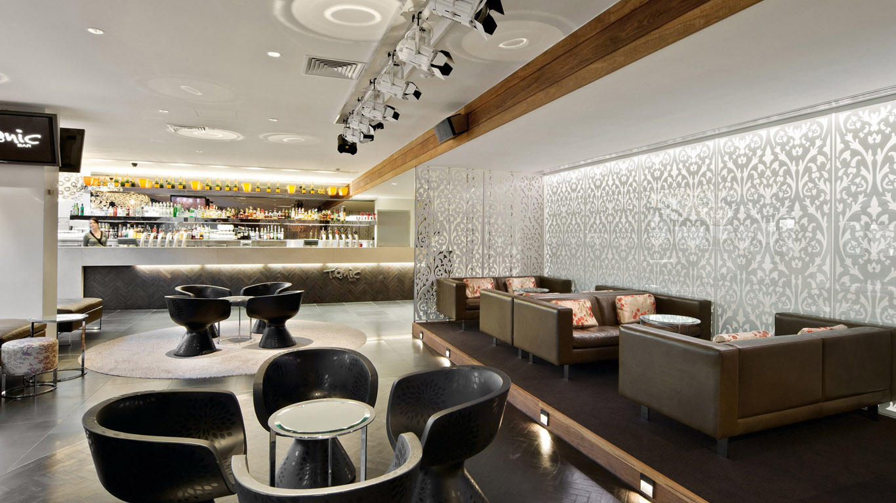
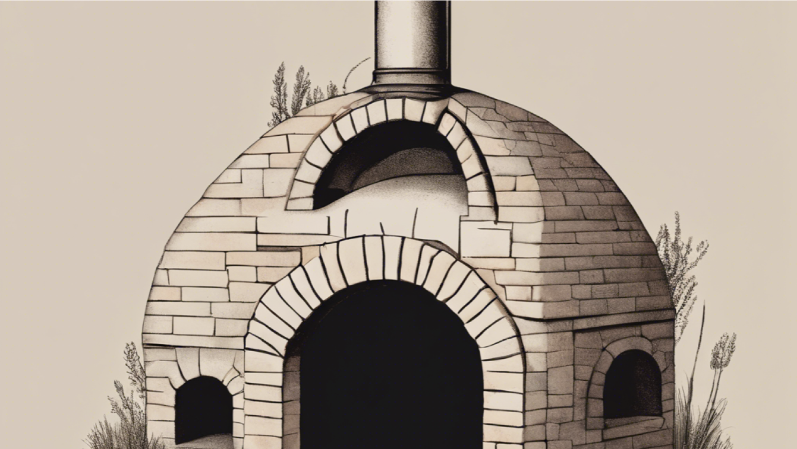
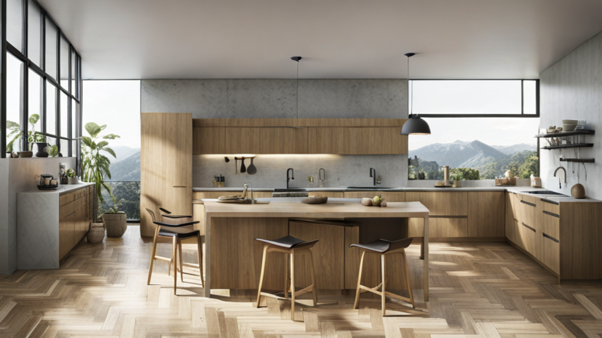

Наша историяВ 2012 году компания Kaori Mau была основана на идее, что пицца должна
быть особенной, и мы воплощаем эту идею во всем, что делаем. Мы создаем еду,
которой гордимся, и доставляем ее быстро и с улыбкой. Миссия "Kaori Mau" -
объединять друзей и семьи с помощью вкусной еды и искреннего гостеприимства.

Наши корни
Мы открыли наше первое заведение в районе XX, чтобы
продемонстрировать нашу страсть к блюдам ручной работы и подлинному
гостеприимству. Названный по первым двум буквам фамилий наших
основателей, "Kaori Mau" всегда был местом, где и члены нашей команды,
и гости чувствовали себя как дома.

Наши ценности
Мы верим, что еда объединяет людей и что служить другим - это привилегия.
Члены нашей команды - это сердце и душа нашего бизнеса, и мы стремимся
создать культуру, в которой каждый чувствует, что его ценят и уважают.
Мы стремимся помогать нашим сообществам и использовать нашу платформу
для того, чтобы изменить мир к лучшему.

Наше будущее
Kaori Mau - это больше, чем просто пиццерия. Мы - семья. Мы - сообщество.
Мы - движение. Мы здесь, чтобы вдохновить на перемены и показать,
что лучший мир возможен. И мы только начинаем.